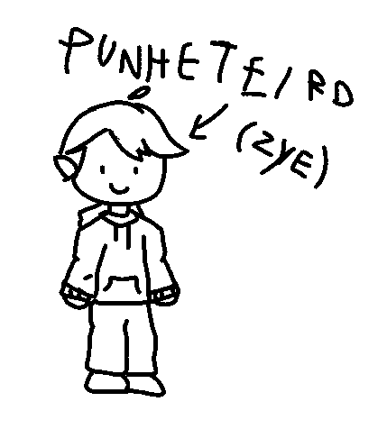

⬅🦆Voltar
Zye

Apelido: Zye/Noocvr/Gayvi
Nome: Davi Costa
Nick: zye_s2
Data de nascimento: 02/04/2012
Sexo: Masculino
Sexualidade: Heterossexual (já foi bi)
Pronomes: Vi/ado
Fatos:
Zye já teve milhares de vícios, mas gosta de Yung lixo e não parece que vai parar de gostar
Zye foi o primeiro amigo de Fog
Ele era punheteiro, mas já acabandonou esse vício após começar a namorar.
É o melhor amigo do Dark(seu primo) e Miranha
Já se chamou Noocvr
Descrição física:
Davi tem a aparência média de uma criança da sua idade e tem uma franja. Normalmente veste preto, usa blusa e calça mesmo no calor
Já pintou o cabelo algumas veses, mas com spray
Curiosidades:
• Zye já teve um canal no Youtube
Relacionamentos:
Amizades: Fog, Miranha, Guilherme e Outros da escola dele...
Namorada: Tinna
Links:
Youtube
X/Twitter
Twitch
Spotify
Roblox
Discord: @zye_s2
Fazes do Zye:
Escrito por ele mesmo.
5 a 6 anos:
Davi era apenas um menino animado que gostava de assistir Moonkase, JVNQ, Minguado e explorar o Tumblr. Apesar de ser uma criança alegre, ele cresceu um pouco traumatizado por conta das brigas familiares, envolvendo tios, tias, avós, etc. Na verdade, nessa época, ele não fazia muita coisa da vida, então podemos pular para os 7 anos. Vale lembrar que essa fase ocorreu durante a pandemia de COVID-19, e ele também conheceu o @O_miranhaDX no prézinho.
7 a 8 anos:
Com 7 anos, Davi conheceu o @Fog, descobriu o canal do Felipe Neto por influência de sua prima, e também começou a se interessar por FNAF graças ao @Fog. Nesse período, ele perdeu um pouco da inocência devido ao TikTok (que só teve uma má influência sobre ele). Além disso, ele conheceu o @shampoo sem sal e entrou no Punhas Web pela primeira vez (mal sabia que isso se tornaria um hábito diário nos próximos anos). Depois disso, ele não conseguia mais olhar para os pais sem pensar besteira. Ele também ganhou um tablet, que acabou sendo quebrado quando seu pai deitou em cima dele sem querer.
9 a 10 anos:
Davi, agora conhecido como Zye, ganhou seu primeiro computador, o que lhe permitiu postar vídeos no YouTube com mais frequência e passar mais tempo em call com o @Fog (embora o computador ainda ficasse na sala). Foi durante essa época que ele descobriu o Saiko, que se tornou seu youtuber favorito. Ele também conheceu o @Guilherme|Vulgo pato m, mas por algum motivo, eles pararam de se falar. Aos 10 anos, finalmente conseguiu levar o PC para o seu quarto. Foi nesse período que ele tentou bater punheta pela primeira vez, mas não gostou muito. Algum tempo depois, ele tentou novamente e adorou, ficando viciado na prática. No início, ele fazia isso na cama, mas hoje em dia prefere o banheiro ou a mesa do computador. Essa foi também a época em que Zye voltou a falar com Guilherme e com seu primo.
11 anos:
Zye descobriu o Spotify e, no começo, só escutava músicas de "Hazbin Hotel". Depois, começou a ouvir músicas de "Steven Universe", e agora seu gosto musical inclui Yung Lixo e Shittrap. A prática da punheta ficou ainda mais intensa. Além disso, ele voltou a falar com o @O_miranhaDX
tenho que atualiza